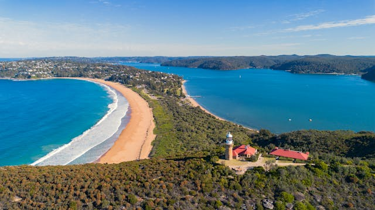
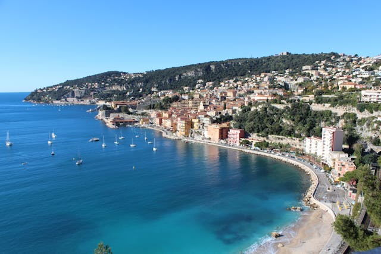
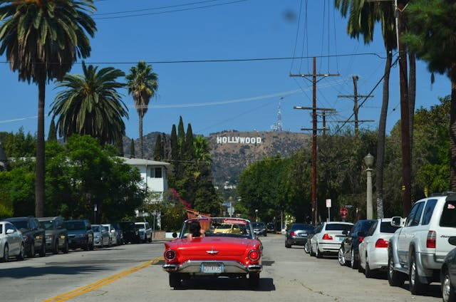

Take a look at some of our featured properties
Palm Beach is a tropical paradise on the 18 mile long barrier island located between the Intracoastal Waterway and the Atlantic Ocean.
Miami is a coastal city in the U.S. state of Florida and the county seat of Miami-Dade County in South Florida. Miami is a major center and leader in finance, commerce, culture, arts, and international trade, and it's metropolitan area is by far the largest urban economy in Florida
Hollywood, sometimes informally called Tinseltown, is a neighborhood and district in the central region of Los Angeles County, California, mostly within the city of Los Angeles. Its name has come to be a shorthand reference for the U.S. film industry and the people associated with it.

Known as the "Venice of America", Fort Lauderdale has 165 miles of inland waterways across the city.[14] In addition to tourism, Fort Lauderdale has a diversified economy including marine, manufacturing, finance, insurance, real estate, high technology, avionics/aerospace, film, and television production.